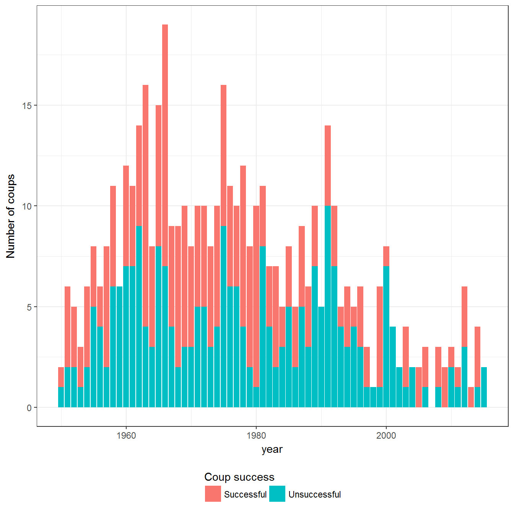
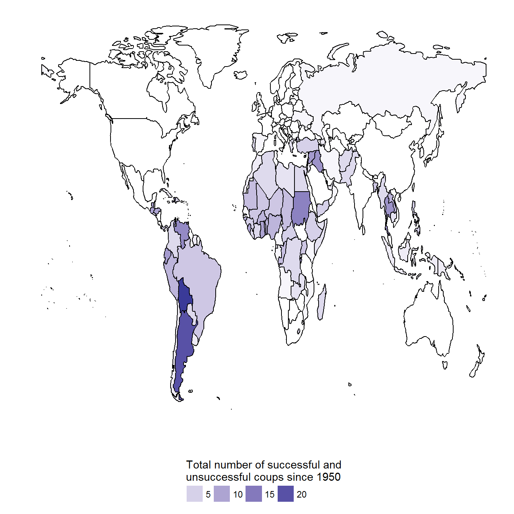
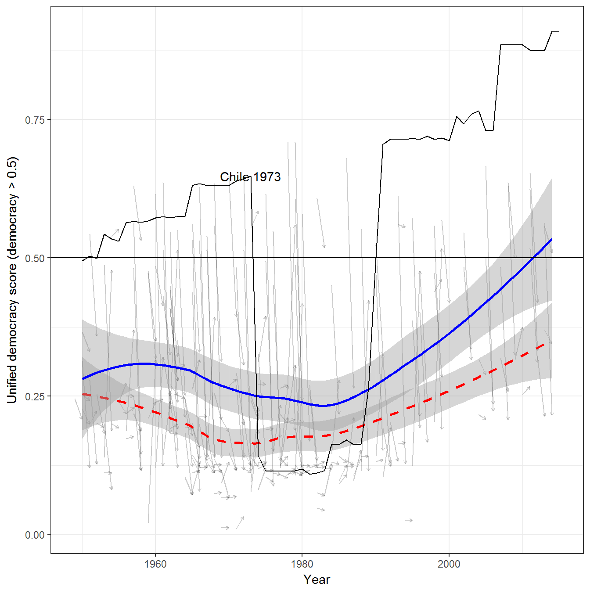
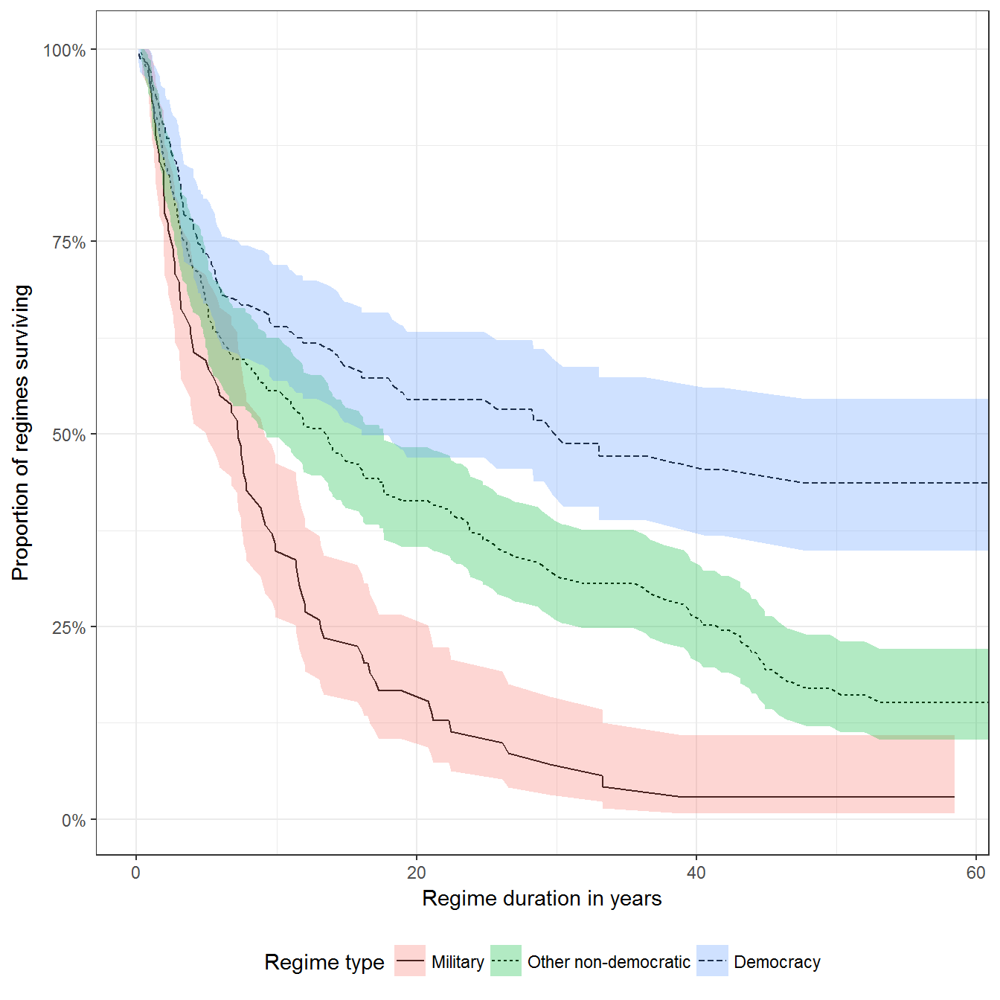
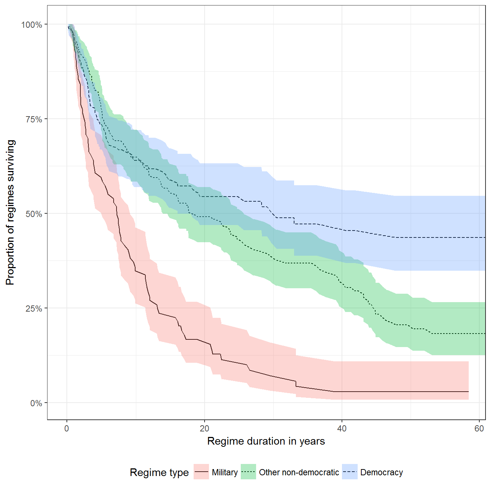
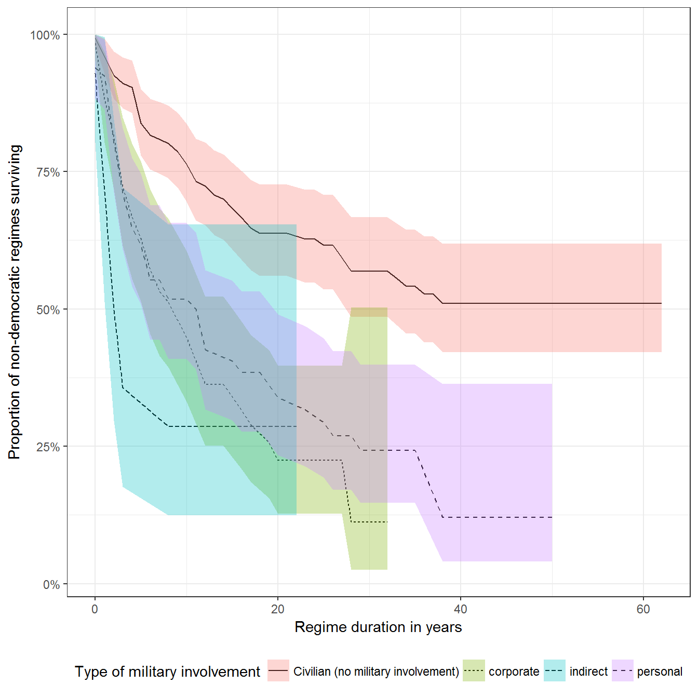

This vignette shows how to replicate and extend the charts in chapter 6 of my book Non-democratic Politics: Authoritarianism, Dictatorships, and Democratization (Palgrave Macmillan, 2016). It assumes that you have downloaded the replication package as follows:
if(!require(devtools)) {
install.packages("devtools")
}
devtools::install_github('xmarquez/AuthoritarianismBook')It also assumes you have the dplyr, ggplot2, scales, forcats, and knitr packages installed:
if(!require(dplyr)) {
install.packages("dplyr")
}
if(!require(ggplot2)) {
install.packages("ggplot2")
}
if(!require(scales)) {
install.packages("forcats")
}
if(!require(forcats)) {
install.packages("scales")
}
if(!require(knitr)) {
install.packages("knitr")
}Successful and unsuccessful military coups, 1950-2015. Data from Powell and Thyne (2011), updated to 2015. The data used to construct these figures slightly overstate the frequency of genuine military coups, since they include coups led by non-military insiders.
library(AuthoritarianismBook)
library(dplyr)
library(ggplot2)
data <- powell_thyne
ggplot(data=data, aes(x=year, fill = attempt_type)) +
geom_bar() +
theme_bw() +
labs(y = "Number of coups", fill = "Coup success") +
guides(fill = guide_legend(title.position = "top")) +
theme(legend.position="bottom")
We can also visualize more or less coup-prone countries:
world <- world %>% filter(id != "Antarctica")
data <- data %>%
mutate(country_name = ifelse(country_name == "Germany (Prussia)", "German Federal Republic", country_name)) %>%
count(country_name)
ggplot() +
geom_map(aes(fill = n, map_id = country_name), map = world, data = data) +
geom_path(data = world,aes(y = lat,x = long,group = group)) +
scale_fill_gradient2() +
theme_minimal() +
theme(legend.position = "bottom") +
labs(fill = "Total number of successful and\nunsuccessful coups since 1950",x = "",y = "") +
guides(fill = guide_legend(title.position = "top")) +
scale_y_continuous(breaks=NULL) +
scale_x_continuous(breaks=NULL) 
This figure uses both Powell and Thyne (2011) and the extended Unified Democracy Scores (Pemstein, Meserve, and Melton 2010; Márquez 2016). The smooth solid black line below represents a smoothed line of fit for the average level of democracy in a country before a successful coup took place (lowess smooth); the dashed line represents a smoothed line of fit for the level of democracy after the coup took place. Each small gray arrow represents the change in the measured level of democracy in a given country produced by a successful coup. Scores above 0.5 can be considered more or less democratic. Chile’s democracy scores for the entire period are provided for illustrative purposes.
data <- left_join(extended_uds, powell_thyne %>%
filter(attempt_type == "Successful") %>%
group_by(country_name, year) %>%
summarise(total_coups = n())) %>%
group_by(country_name) %>%
mutate(lagged_index = lag(index)) %>%
filter(year >= 1950) ## Joining, by = c("country_name", "year")ggplot(data= data %>% filter(!is.na(total_coups))) +
geom_segment(aes(x = year-1,
xend = year,
y = lagged_index,
yend = index),
alpha = 0.2,
arrow = arrow(length = unit(0.1, "cm"))) +
geom_smooth(aes(x= year,y = index),
color="red",
linetype=2) +
geom_smooth(aes(x = year,y= lagged_index),
color="blue",
linetype=1) +
geom_path(data= data %>% filter(country_name == "Chile"),
aes(x = year,
y = lagged_index)) +
geom_text(data = data %>% filter(!is.na(total_coups), country_name == "Chile"),
aes(x = year,
y = lagged_index,
label = paste(country_name,year))) +
theme_bw() +
geom_hline(yintercept=0.5) +
labs(x = "Year",
y = "Unified democracy score (democracy > 0.5)")## `geom_smooth()` using method = 'loess'## `geom_smooth()` using method = 'loess'
This figure assumes you have installed the packages survival, broom, and lubridate. You can install them as follows:
if(!require(survival)) {
install.packages("survival")
}
if(!require(broom)) {
install.packages("broom")
}
if(!require(survival)) {
install.packages("survival")
}The figure models the survival of regimes without any correlates other than regime type. It uses the data from Geddes, Wright, and Frantz (2014) to measure the survival of regimes. The figure here is slightly different from the published figure since; it corrects a small error.
library(broom)
library(survival)
library(lubridate)
data <- all_gwf_periods %>%
mutate(gwf_fail = (gwf_enddate != ymd("2010-12-31")),
military_regime = ifelse(grepl("military",
gwf_full_regimetype,
ignore.case=TRUE),
"Military",
ifelse(grepl("democracy",
gwf_full_regimetype,
ignore.case=TRUE),
"Democracy",
"Other non-democratic")))
survival.model <- survfit(Surv(time = as.double(gwf_enddate - gwf_startdate,
units="days"),
event = gwf_fail) ~ military_regime,
data = data) %>%
tidy() %>%
mutate(strata = gsub("military_regime=","", x = strata))
survival.model$strata <- forcats::fct_relevel(as.factor(survival.model$strata),
"Military",
"Other non-democratic")
ggplot(data = survival.model,
aes(x = time/365, y = estimate,
linetype = strata, fill = strata)) +
geom_line() +
theme_bw() +
labs(y = "Proportion of regimes surviving",
x = "Regime duration in years",
fill = "Regime type",
linetype = "Regime type") +
theme(legend.position="bottom")+
geom_ribbon(aes(ymin=conf.low, ymax=conf.high), alpha=0.3) +
coord_cartesian(xlim = c(0, 58)) +
scale_y_continuous(labels = scales::percent)
This model can be estimated by omitting regimes that are neither democratic nor non-democratic (state failure, etc.):
data <- all_gwf_periods %>%
filter(!(gwf_full_regimetype %in% c("warlord",
"warlord/foreign-occupied",
"provisional",
"foreign-occupied",
"not-independent"))) %>%
mutate(gwf_fail = (gwf_enddate != ymd("2010-12-31")),
military_regime = ifelse(grepl("military",
gwf_full_regimetype,
ignore.case=TRUE),
"Military",
ifelse(grepl("democracy",
gwf_full_regimetype,
ignore.case=TRUE),
"Democracy",
"Other non-democratic")))
survival.model <- survfit(Surv(time = as.double(gwf_enddate - gwf_startdate,
units="days"),
event = gwf_fail) ~ military_regime,
data = data) %>%
tidy() %>%
mutate(strata = gsub("military_regime=","", x = strata))
survival.model$strata <- forcats::fct_relevel(as.factor(survival.model$strata),
"Military",
"Other non-democratic")
ggplot(data = survival.model,
aes(x = time/365, y = estimate,
linetype = strata, fill = strata)) +
geom_line() +
theme_bw() +
labs(y = "Proportion of regimes surviving",
x = "Regime duration in years",
fill = "Regime type",
linetype = "Regime type") +
theme(legend.position="bottom")+
geom_ribbon(aes(ymin=conf.low, ymax=conf.high), alpha=0.3) +
coord_cartesian(xlim = c(0, 58)) +
scale_y_continuous(labels = scales::percent)
Here we use data on military involvement in non-democratic regimes collected by Svolik (2012).
library(broom)
library(survival)
count_sequence_breaks <- function(seq, seq_step = 1) {
first_diff <- c(seq_step, diff(seq)) - seq_step
periods <- cumsum(abs(first_diff))
periods
}
data <- svolik_institutions %>%
group_by(country_name) %>%
mutate(military = ifelse(is.na(military),"Not available", military),
mil_regime_no = count_sequence_breaks(unclass(as.factor(military)), seq_step=0),
svolik_fail = (year != max(year))) %>%
group_by(country_name, mil_regime_no, military) %>%
summarise(min_year = min(year), max_year = max(year), svolik_fail = min(svolik_fail)) %>%
filter(military != "Not available") %>%
mutate(military = as.factor(military),
military = forcats::fct_recode(military,
"Civilian (no military involvement)" = "civilian"))
survival.model <- survfit(Surv(time = max_year - min_year,
event = svolik_fail) ~ military,
data=data) %>%
tidy() %>%
mutate(strata=gsub("military=","",x=strata))
ggplot(data = survival.model,
aes(x = time,y = estimate, linetype = strata, fill = strata)) +
geom_line() +
theme_bw() +
labs(y = "Proportion of non-democratic regimes surviving",
x = "Regime duration in years",
fill = "Type of military involvement",
linetype = "Type of military involvement") +
theme(legend.position = "bottom") +
geom_ribbon(aes(ymin = conf.low, ymax = conf.high), alpha = 0.3) +
scale_y_continuous(labels = scales::percent)
Geddes, Barbara, Joseph Wright, and Erica Frantz. 2014. “Autocratic Breakdown and Regime Transitions: A New Data Set.” Perspectives on Politics 12 (1): 313–31. doi:10.1017/S1537592714000851.
Márquez, Xavier. 2016. “A Quick Method for Extending the Unified Democracy Scores.” Available at SSRN 2753830. doi:10.2139/ssrn.2753830.
Pemstein, Daniel, Stephen Meserve, and James Melton. 2010. “Democratic Compromise: A Latent Variable Analysis of Ten Measures of Regime Type.” Political Analysis 18 (4): 426–49. doi:10.1093/pan/mpq020.
Powell, Jonathan M., and Clayton L. Thyne. 2011. “Global Instances of Coups from 1950 to 2010: A New Dataset.” Journal of Peace Research 48 (2): 249–59.
Svolik, Milan. 2012. The Politics of Authoritarian Rule. Book. Cambridge: Cambridge University Press.